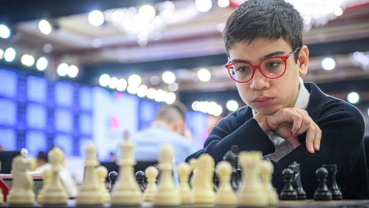

Faustino Oro: el niño de oro
Tata Steel Challengers não foi o lugar da sua terceira norma para bater o recorde de GM mais novo, mas que progresso para uma criança de 12 anos!
Abdusattorov: campeão do Tata Steel Masters
Com incrível vitória sobre o atual Campeão Mundial, Gukesh, e uma incrível partida contra Erigaisi, Abdusattorov levou o troféu da edição de 2026."
Fier surpreende Magnus Carlsen!?
O GM brasileiro Alexandr Fier jogou grande partida contra o atual no1 do xadrez, Magnus Carlsen que disse: "Esse brasileiro é bom de drible"(tradução livre).